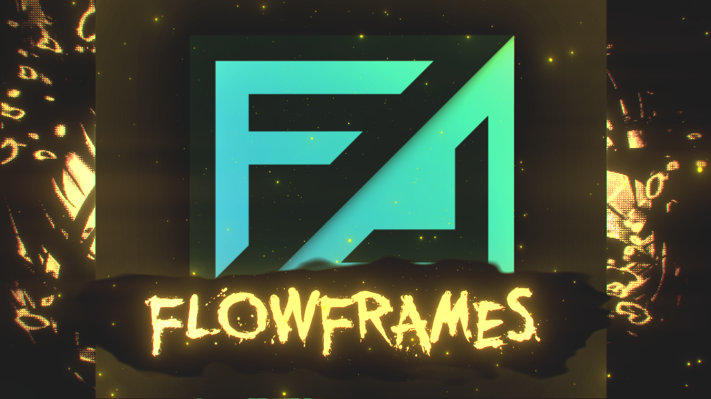

FlowFrames: Оптимизация видео
FlowFrames — это мощная утилита для интерполяции видео, которая позволяет увеличивать количество кадров в секунду с использованием технологий ИИ. Программа идеально подходит для создания плавных видеороликов или улучшения старых записей.
Основные функции:
- Интерполяция кадров с использованием современных алгоритмов.
- Поддержка различных форматов видео.
- Удобный интерфейс для быстрого редактирования.
- Интеграция с аппаратным ускорением.
Преимущества использования FlowFrames:
FlowFrames выделяется среди других программ благодаря высокой скорости обработки и качеству результата. Вы можете использовать его для:
- Создания плавного видео из кадров с низкой частотой.
- Улучшения старых записей или домашних видео.
- Оптимизации игрового контента для демонстрации.
Как начать?
- Скачайте программу с официального сайта.
- Установите её на ваш компьютер.
- Загрузите видео и настройте параметры интерполяции.
- Нажмите «Старт» и наслаждайтесь результатом!